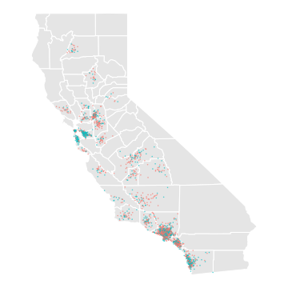
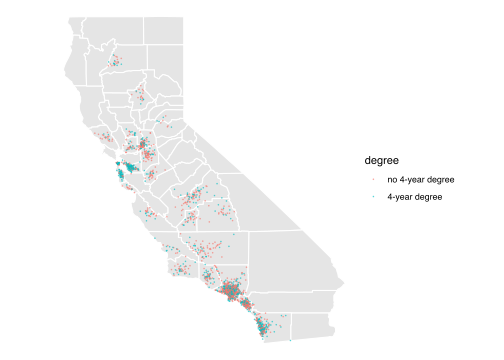
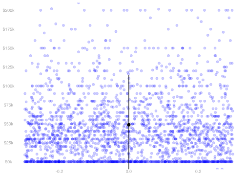
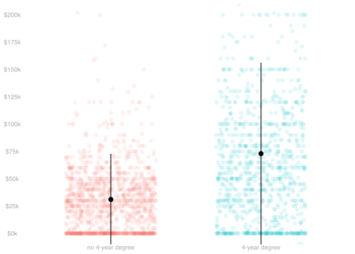

Probability Review: Conditional Expectations
Imagining a Population


| income | education | county | |
|---|---|---|---|
| 1 | $48k | 16 | LA |
| 2 | $31k | 12 | unknown |
| 3 | $41k | 16 | LA |
| ⋮ | NA | NA | NA |
| 5677500 | $175k | 12 | orange |
| income | education | county | |
|---|---|---|---|
| 1 | $266k | 16 | LA |
| 2 | $51k | 13 | san joaquin |
| 3 | $0k | 16 | orange |
| ⋮ | NA | NA | NA |
| 2271 | $45k | 16 | LA |
- We don’t have much information about the people in our population. Except the ones in our sample.
- But, for the sake of visualization, I’ve made some up.
- We’ll put visualizations of this fake population on the left.
- Visualizations of the (real) sample will be on the right.
Sampling


- We’ll act as if our data were sampled, with replacement, from this population.
- On the left, I’ve illustrated the population.
- On the right, I’ve illustrated our sample.
- Our working assumption: each dot on the right was chosen, from those on the left, by rolling a big die.
- That’s not quite right, but we’ll stick with it throughout the semester.
Sample and Population Means


- One thing we often want to estimate is the mean of our population.
\mu = \frac{1}{m}\sum_{j=1}^m y_j
- We’ll think of the mean in our sample as an estimate of it.
\hat \mu = \frac{1}{n}\sum_{i=1}^n Y_i
- We have shown last time that this estimator is unbiased.
\mathop{\mathrm{E}}[\hat \mu] = \mu \qfor \underset{\text{\color{#404040}{population mean}}}{\mu = \mathop{\mathrm{E}}[Y_i] = \frac{1}{m}\sum_{j=1}^m y_j}
- We have almost calculated its standard deviation. Here it is.
\mathop{\mathrm{sd}}[\hat \mu] = \frac{\sigma}{\sqrt{n}} \qfor \underset{\text{\color{#404040}{population standard deviation}}}{\sigma=\sqrt{\mathop{\mathrm{\mathop{\mathrm{V}}}}[Y_i]}=\sqrt{\frac{1}{m}\sum_{j=1}^m (y_j - \mu)^2}}
- We did it in the special case of binary Y_i in our last lecture.
- We’ll generalize next time. It’s a one-line change.
Subsample and Subpopulation Means


- We’ll often be interested in the mean income in subpopulations, too.
- We’ll think about the subsample with X_i=x for some value x.
- e.g. X_i=1 for people with a 4-year degree and X_i=0 for people without. \mu(x) = \frac{1}{m_x}\sum_{j:x_j = x } y_j \quad \text{ where } \quad m_x = \sum_{j:x_j=x} 1.
- We’ll use the mean in the corresponding subsample to estimate it.
\hat \mu(x) = \frac{1}{N_x}\sum_{i:X_i=x} Y_i \quad \text{ where } \quad N_x = \sum_{i:X_i=x} 1.
- If we want to know a difference of subpopulation means, as we often do …
- … we can estimate it using a difference of subsample means.
Are These Good Estimators?


- We want to know about bias, i.e. location of the sampling distribution relative to the estimation target.
- That’s where we’re headed today. We’ll show they’re unbiased.
- And we want to know about precision, i.e., how wide our calibrated intervals would be.
- We’ll get to this next time.
Observations as Random Variables


- The notation y_j refers to a number.
- It’s the income of the jth person in our population. That’s just some person.
- The notation Y_i refers to something else.
- It’s the income of the ith person we call in our survey. That’s not a person.
- That’s the result of a random process—the roll of a die.
- To summarize this result, we talk about the probability distribution of Y_i.
Notation Conventions
- Random variables are written in uppercase: X, Y, Z, etc. Constants are written in lowercase: x, y, z, etc.
- We’ll use the same letter for a random variable and the value it takes on. x is a possible value of X, y of Y, etc.
- Estimators are also random variables, but instead of uppercase we use a hat: \hat\theta,\hat \mu, \hat \sigma, etc.
- We’ll use the same letter for the estimator and what it’s meant to estimate.
- \hat \mu is an estimator of \mu; \hat\theta is an estimator of \theta.
- We’ll use \theta and \mu in different but ocassionally overlapping ways.
- \mu will be our population mean and \mu(x) the mean in the subpopulation with X=x.
- \theta will be our estimation target.
- So far, it’s often been the population mean, so \theta=\mu.
- Or a subpopulation mean, so \theta=\mu(x).
- Later in the semseter, it’ll tend to be something a bit more complicated.
Independence


- Random variables are independent if …
- … in intuitive terms, knowing the value of one doesn’t tell us anything about the value of the other.
- … in mathematical terms, their joint probability distribution is the product of their individual marginals ones.
P(Y_1 ... Y_k = y_1 \ldots y_k) = P(Y_1=y_1) \times \ldots \times P(Y_k=y_k).
- That’s what happens when the randomness in each Y_i comes from a different roll of the die.
- And since that’s how we’re doing our sampling in the Current Population Survey, it’ll be true in our sample.
- Because we draw each of our observations the same way, they also have the same probability distribution.
- We say they’re independent and indentically distributed.
- At least, that’s what we’re pretending when we analyze CPS data in this class. Reality is more complicated.
Conditioning


- Conditioning is, in effect, a way of thinking about sampling as a two-stage process.
- First, we choose the color of our dot, i.e., the value of X_i, according to it frequency in the population.
- Then, we choose a specific one of those dots, i.e. J_i, from those with that color—with equal probability.
- Because this is just a way of thinking, each person still gets chosen with probability 1/m. P(J_i=j) = \begin{cases} \frac{m_{green}}{m} \ \ \ \ \ \times \frac{1}{m_{green}} \ \ \ \ \ =\ \frac{1}{m} & \text{if the $j$th dot is green ($x_j=1$) } \\ \frac{m-m_{green}}{m} \times \frac{1}{m-m_{green}} \ = \ \frac{1}{m} & \text{otherwise} \end{cases}
Conditioning


- The Conditional Probability of Y_i is the probability resulting from the second stage.
- It’s a function of the result of the first.
- P(Y_i=y \mid X_i=1) is the probability distribution of Y_i when we’re rolling the ‘green die’.
- P(Y_i=y \mid X_i=0) is the probability distribution of Y_i when we’re rolling the ‘red die’.
- And the Conditional Expectation of Y_i is the ‘second stage expected value’ in the same sense.
- \mathop{\mathrm{E}}[Y_i \mid X_i=1] is the expected value of Y_i when we’re rolling the ‘green die’.
- That is, the mean value \mu(1) of y_j in the subpopulation drawn as little green dots.
- \mathop{\mathrm{E}}[Y_i \mid X_i=0] is the expected value of Y_i when we’re rolling the ‘red die’.
- That is, the mean value \mu(0) of y_j in the subpopulation drawn as little red dots.
Conditioning


The law of iterated expectations
E \{ E( Y \mid X ) \} \quad \text{ for any random variables $X, Y$}
To calculate the mean of Y, we can average within subpopulations, then across subpopulations.
Irrelevance of independent conditioning variables
E( Y \mid X, X' ) = E( Y \mid X ) \quad \text{ when $X'$ is independent of $X,Y$ }
If X' is unrelated to X and Y, holding it constant doesn’t affect the relationship between them.
Linearity of Expectations


\begin{aligned} E ( a Y + b Z ) &= E (aY) + E (bZ) \\ &= aE(Y) + bE(Z) \\ & \text{ for random variables $Y, Z$ and numbers $a,b$ } \end{aligned}
- There are two things going on here.
- To average a sum of two things, we can take two averages and sum.
- To average a constant times a random variable, we multiply the random variable’s average by the constant.
- In other words, we can distribute expectations and can pull constants out of them.
Linearity of Conditional Expectations


\begin{aligned} E\{ a(X) Y + b(X) Z \mid X \} &= E\{a(X)Y \mid X\} + E\{ b(X)Z \mid X\} \\ &= a(X)E(Y \mid X) + b(X)E(Z \mid X) \end{aligned}
- This is like linearity of expectations, but with a twist.
- When we condition on X, we’re working with subpopulations in which X is constant.
- This means we can act as if functions of X are constants.
- So we can pull them out of expectations that are conditional on X.
Check Your Understanding

- Suppose we sample a point (X, Y) uniformly at random from the population of 6 points above.
- What is the conditional expectation function \mu(x) at x=0 and x=1?
- What is the conditional expectation \mu(X)?
- \mu(0)=1 and \mu(1)=1.25
- \mu(X) is a random variable taking on these two values. \mu(X) = \begin{cases} 1 & \text{ when } X=0 \\ 1.25 & \text{ when } X=1 \end{cases}
The Indicator Trick

- Suppose we sample a point (X, Y) uniformly at random from the population of 6 points above.
- What is 1_{=1}(X)\mu(X)?
1_{=1}(X)\mu(X) is a random variable taking on these two values. 1_{=1}(X)\mu(X) = \begin{cases} 0 \times \mu(0) = 0 \times 1 & \text{ when } X=0 \\ 1 \times \mu(1) = 1 \times 1.25 & \text{ when } X=1 \end{cases}
We can write it equivalently as 1_{=1}(X)\mu(1) because either …
- X=0, so 1_{=1}(X)\mu(X) = 1_{=1}(X)\mu(1) = 0
- X=1, so 1_{=1}(X)\mu(X) = 1_{=1}(X)\mu(1) =\mu(1)
This comes up a lot working with subsample means.
We’ll swap 1_{=1}(X)\mu(X) for 1_{=1}(X)\mu(1) often, referring to the indicator trick.
A More Realistic Example

Let’s think about a random person drawn from this population
- Y is their income
- X is an indicator for having a four-year degree.
Suppose the subpopulation means are 70k for people with degrees and 30k for people without.
And that 4/10 of our population has degrees.
Q. What is E(Y \mid X)? And what is E(Y)?
- E(Y \mid X) is a random variable that is either 70k or 30k
- It’s 70k with probability 4/10, when X=1.
- It’s 30k with probability 6/10, when X=0.
- \mathop{\mathrm{E}}(Y) is its expectation. A number.
- We’ll calculate it using iterated expectations.
\begin{aligned} E\{ E( Y \mid X ) \} &= E(Y|X=1)P(X=1) + E(Y|X=0)P(X=0) \\ &= 70k \cdot 4/10 + 30k \cdot 6/10 = 28k + 18k = 46k \end{aligned}
Review Exercise 1

- Suppose we sample a point (X, Y) in the plot above uniformly at random.
- Ignore the jitter; just think of the points as being at X=0 and X=1.
- What is \mathop{\mathrm{E}}\{ \mu(X) \}?
- There are two ways of thinking about calculating \mathop{\mathrm{E}}\{\mu(X)\}.
- We just calculate the expectation of it, thinking of it as an arbitrary random variable.
- We use the law of iterated expectations to show it’s the unconditional mean of Y.
\small{ \begin{aligned} \mathop{\mathrm{E}}\cb*{ \mu(X) } &= \frac{1}{2}\mu(0) + \frac{1}{2}\mu(1)= \frac{1}{2} \cdot 1 + \frac{1}{2} \cdot 1.25 = 1.125 && \text{ the first way } \\ \mathop{\mathrm{E}}\cb*{ \mu(X) } &= \mathop{\mathrm{E}}\cb*{\mathop{\mathrm{E}}\p*{Y \mid X}} = \mathop{\mathrm{E}}\cb*{Y} = \frac{1}{6} \cdot 0.75 + \frac{1}{6} \cdot 1 + \ldots && \text{ the second way } \end{aligned} }
Review Exercise 2

- Suppose we sample a point (X, Y) in the plot above uniformly at random.
- Ignore the jitter; just think of the points as being at X=0 and X=1.
- What is \mathop{\mathrm{E}}\{ 1_{=1}(X)\mu(X) \}/\mathop{\mathrm{E}}(1_{=1}(X))?
- It’s \mu(1). 1_{=1}(X)\mu(X)=1_{=1}(X)\mu(1), so … \begin{aligned} \mathop{\mathrm{E}}\{ 1_{=1}(X)\mu(X) \} &= \mathop{\mathrm{E}}\{ 1_{=1}(X)\mu(1) \} \\ &= \mu(1) \ \mathop{\mathrm{E}}\{ 1_{=1}(X) \} \\ \end{aligned}
Review Exercise 3

- Suppose we sample a point (X, Y) in the plot above uniformly at random.
- Ignore the jitter; just think of the points as being at X=0 and X=1.
- What is \mathop{\mathrm{E}}\{ 1_{=0}(X)\mu(X) \}/\mathop{\mathrm{E}}(1_{=0}(X))?
- It’s \mu(0). It’s analogous to the last one. 1_{=0}(X)\mu(X)=1_{=0}(X)\mu(0), so … \begin{aligned} \mathop{\mathrm{E}}\{ 1_{=0}(X)\mu(X) \} &= \mathop{\mathrm{E}}\{ 1_{=0}(X)\mu(0) \} \\ &= \mu(0) \ \mathop{\mathrm{E}}\{ 1_{=0}(X) \} \\ \end{aligned}
The Sample Mean


Claim. The sample mean is an unbiased estimator of the population mean. \mathop{\mathrm{E}}[\hat\mu] = \mu
\begin{aligned} \mathop{\mathrm{E}}\sb*{\frac1n\sum_{i=1}^n Y_i} &= \frac1n\sum_{i=1}^n \mathop{\mathrm{E}}[Y_i] && \text{ via linearity } \\ &= \frac1n\sum_{i=1}^n \mu && \text{ via equal-probability sampling } \\ &= \frac1n \times n \times \mu = \mu. \end{aligned}